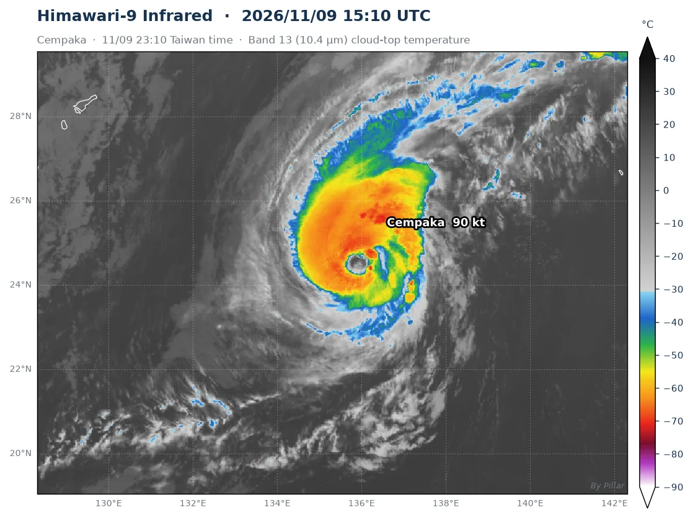

CEMPAKA
Cat2 Cat2 ·90 kt ·24.3°N, 135.3°E
- 80 kt in 24 h ↓24 小時後 80 kt ↓
- Taiwan landfall <1% in every model登陸臺灣各模式都 <1%
- Tokyo strike up to 16% (AIGEFS; 1 of 8 models ≥1%)東京侵襲最高 16%（AIGEFS；8 個模式中 1 個 ≥1%）
- Since the 09/00Z run (WN3-C): 60 h position shifted 326 km northeast; peak wind 81 → 86 kt.跟 09/00Z 那報比（WN3-C）：60 小時位置往東北移了 326 公里；最大風速 81 → 86 kt。
1 active system · ensemble guidance from 9 models, refreshed every 10–15 minutes.

CEMPAKA
Moving east-northeast at about 21 km/h.向東北東移動，時速約 21 公里。
Weakening to 80 kt (Cat1) in 24 h.24 小時後減弱至 80 kt（Cat1）。
Taiwan landfall: under 1% in every model.登陸臺灣：各模式機率都低於 1%。
Since the 09/00Z run (WN3-C): 60 h position shifted 326 km northeast; peak wind 81 → 86 kt.跟 09/00Z 那報比（WN3-C）：60 小時位置往東北移了 326 公里；最大風速 81 → 86 kt。
Consensus at 48 h: 8 of 8 ensemble means agree moderately, within 277 km of their median position.48 小時共識：8 個系集平均中有 8 個大致一致，離中位位置都在 277 公里內。
Most accurate so far: WN3-C, lowest 72 h track error across all storms (88 km, n=73). 目前最準：WN3-C，所有颱風的 72 小時路徑誤差最低（88 公里，n=73）。

How to read this
Himawari-9 infrared (band 13, 10.4 µm) for the last 3 hours, one frame every 10 minutes, centered on the storm; it opens on the latest frame · Colors show cloud-top temperature: the colder the top, the taller the cloud and the stronger the convection; a warm dot ringed by the coldest colors is the eye and eyewall · Centered on the latest JTWC position (warnings come every 6 h, so the storm may have moved a little since); the track and JTWC forecast are on the ocean heat content map below · Raw data from the NOAA/JMA copy on AWS, observation time in the title of each frame
 🔍 Click to enlarge
🔍 Click to enlargeHow to read this
Tropical cyclone heat potential: heat stored above 26 °C between the sea surface and the 26 °C isotherm (kJ/cm²), computed from the latest daily CMEMS (Copernicus Marine) 1/12° ocean analysis, or HYCOM (US Navy) as a backup · A thick warm layer keeps the water under a typhoon warm even when it stirs the ocean, which favors strengthening; about 50 kJ/cm² (yellow and warmer) is a common threshold · Black = water colder than 26 °C or land · Dot = current JTWC position, solid line = track so far, dashed = JTWC forecast (dots every 24 h)
Ocean Heat Content along the JTWC Track
 🔍 Click to enlarge
🔍 Click to enlargeHow to read this
Ocean heat content under the forecast center, sampled every 6 h along the latest JTWC forecast track (mean within ±0.5° of the center) · Dashed line = 50 kJ/cm², a common threshold for intensification: above it the warm layer is thick enough that the storm’s own mixing does not cool the surface much · Gray squares = land or water colder than 26 °C · The ocean analysis is one daily snapshot, so this is the ocean the storm will meet if it follows the JTWC track, not a forecast of how the ocean changes
 🔍 Click to enlarge
🔍 Click to enlargeHow to read this
Difference between the 200 hPa and 850 hPa winds, averaged 200–800 km from the center, every 6 h along the AIFS-single (deterministic) forecast track — winds and track come from the same AIFS run · Strong shear tilts the storm's upper and lower circulation apart and usually stops it strengthening: below 10 kt is low, 10–20 kt moderate, above 20 kt high · Arrows = direction the shear points (from the low-level wind toward the upper-level wind); the storm's heaviest rain and convection tend to sit downshear-left · Data: ECMWF Open Data
 🔍 Click to enlarge
🔍 Click to enlarge


How to read this
AIFS-single 500 hPa streamlines, wind speed (shading) and height (gray, every 30 gpm) · Red line = 5880 gpm, the usual edge of the subtropical high: typhoons tend to move around it, west while the high extends west, turning north where it ends · Navy line and dot = AIFS-single track and the storm's position at that time
 🔍 Click to enlarge
🔍 Click to enlargeSource: Joint Typhoon Warning Center (JTWC) — U.S. Navy & Air Force
 🔍 Click to enlarge
🔍 Click to enlarge| Hour | JTWC11/09 12:00 | JMA11/09 12:00 | CWA11/09 12:00 |
|---|---|---|---|
| Now | 24.3°N 135.3°E90 kt | 24.4°N 135.4°E65 kt | 24.3°N 135.4°E74 kt |
| +12 h | 25.0°N 137.7°E90 kt | 24.8°N 137.7°E75 kt | 25.2°N 138.2°E74 kt |
| +24 h | 26.0°N 141.3°E80 kt | 25.5°N 141.3°E70 kt | 26.0°N 141.7°E64 kt |
| +48 h | 28.3°N 150.6°E60 kt | 27.4°N 150.3°E55 kt | 28.2°N 150.0°E– |
| +72 h | 29.8°N 159.9°E40 kt | 27.0°N 158.3°E40 kt | — |
| +96 h | — | 25.9°N 159.3°E– | — |
How to read this
JTWC (US), JMA (Japan) and CWA (Taiwan) official tracks · JTWC reports 1-minute winds, JMA and CWA 10-minute winds, so JTWC numbers run higher for the same storm · Time under each agency = forecast base time (UTC) · Map labels = valid time, day/hour UTC (e.g. 23/12Z = 23rd 12:00 UTC = 20:00 Taiwan time)
| Model | WN3-C11/09 06Z · ≤66 h | WN2-C r211/09 06Z · ≤60 h | WN2-C r111/09 06Z · ≤66 h | WN2-C 100011/09 06Z · ≤72 h | GENC11/09 06Z · ≤96 h | AIFS-ENS11/09 06Z · ≤84 h | AIFS-single11/09 06Z · ≤54 h | ECMWF-ENS11/09 06Z · ≤126 h | ECMWF HRES11/09 06Z · ≤72 h | AIGEFS11/09 06Z · ≤198 h | AIGFS11/09 06Z · ≤168 h | GEFS11/09 06Z · ≤162 h | GFS11/09 06Z · ≤138 h |
|---|---|---|---|---|---|---|---|---|---|---|---|---|---|
| Taiwan landfallstorm center moves onto Taiwan's main island (outlying islands excluded) | |||||||||||||
| tw_landfall | <1% | <1% | <1% | <1% | <1% | <1% | — | <1% | — | <1% | — | <1% | — |
| City striketrack passes within 1° (~111 km) of the city | |||||||||||||
| shanghai | <1% | <1% | <1% | <1% | <1% | <1% | — | <1% | — | 3%11/17 00Z | — | <1% | — |
| tokyo | <1% | <1% | <1% | <1% | <1% | <1% | — | <1% | — | 16%11/15 12Z | ✓11/15 18Z | <1% | — |
| taipei, taichung, kaohsiung, hualien, hengchun: under 1% in every modeltaipei、taichung、kaohsiung、hualien、hengchun：各模式都低於 1% | |||||||||||||
How to read this
Share of members whose track passes within 1° (~111 km) of the city · Time below = median first arrival among those members (UTC) · Taiwan cities always shown; others only when any model reaches 1%
No member brings the center within 110 km of any county.
How to read this
Per county: share of ensemble members whose center passes within 110 km (the same 1° rule as the strike maps), and the window when those members have the center nearby: median time of first entry to median time of last exit (UTC) · This is when the center is close, not when winds start: gales usually arrive several hours earlier and linger after · Counties with under 1% in every member are summarised in one line


Genesis Potential
Where the next storm may form — ensemble tracks for the Western Pacific, model by model
 🔍 Click to enlarge
🔍 Click to enlargeCircles = ensemble members at each 6-hr step, colored by minimum sea level pressure. Gray lines = individual ensemble tracks (up to 360 h; GEFS 120 h). Data sourced from Google DeepMind WN3-C.


Storm Archive
Every storm this site has followed: the real JTWC track, how each model's forecasts changed run by run, and how far off they turned out to be.
Thick colored line = the real JTWC track, colored by intensity · Orange = the selected run's ensemble-mean (or deterministic) forecast, with a dot every 24 h · Thin lines = all other runs of the same model, light = older, dark = newer · Drag the slider to step through the runs
Loading…
How to read this site
This site gathers AI and physics-based ensemble forecasts for Western Pacific tropical cyclones and redraws them in one common style every 10–15 minutes, next to the official forecasts from JTWC, JMA (Japan) and CWA (Taiwan). Each storm page has five tabs: Summary (a 3-hour Himawari-9 infrared satellite loop, the ocean heat content under the storm, the vertical wind shear along the AIFS track, the 500 hPa steering flow, the JTWC forecast, the official forecasts side by side, and Taiwan landfall and city strike probabilities), Track (model comparison, ensemble maps, animation, an interactive map and track trend), Strike (strike probabilities by area, by period and for 34-kt winds), Intensity (intensity forecast) and Verification (track, along-/cross-track and intensity errors). One model menu at the top switches every chart to the same model. The Archive keeps every storm after it is gone, with its real track and how the forecasts did.
- The Intensity tab adds a bias-corrected intensity line: the ensemble mean with the model's season-to-date intensity bias removed, alongside the JTWC forecast強度分頁新增「偏差修正後的強度」：系集平均扣掉該模式本季的平均強度偏差，與 JTWC 官方預報並列
- The Archive's Season panel adds verification by situation (before/after recurvature, intensity at init) and a genesis-signal check (1000-member clusters vs the storms that formed)歷史頁「本季至今」新增依情境拆開的校驗（轉向前／後、起報時強度）與生成訊號對照（1000 成員系集的生成群 vs 實際生成的颱風）
- The Summary tab adds a Taiwan-by-county table: each model's chance that the center passes within 110 km of every county, and the window when it is nearby (first entry to last exit)概況分頁新增「臺灣各縣市」表：各模式中心經過每個縣市 110 公里內的機率，以及中心在附近的時間窗（首次進入～最後離開）
- An alerts feed (RSS / JSON Feed, linked on the About page): new systems, naming, intensity-category changes, large forecast shifts and Taiwan landfall chance jumps新增通知 feed（RSS／JSON Feed，連結在說明頁）：新系統、命名、強度分級變化、預報大幅移動、登陸臺灣機率跳動
- The interactive map gets a time slider: untick "Full tracks" to scrub or play through the forecast hours; tracks are drawn up to that hour and a dot marks each member's center then互動地圖新增時間軸：取消「完整路徑」後可以拉到某個預報時數或按播放，路徑只畫到那裡，並以點標出每個成員那一刻的中心位置
- The Strike tab adds "My location": for your position or any place, each model's chance that the center passes within 110 km, closest approach, timing and wind then, all computed in the browser侵襲分頁新增「我的位置」：用你的位置或任一地點，算各模式中心經過 110 公里內的機率、最近距離、時間與當時風速；全部在瀏覽器內計算
- Downloads: ensemble-mean tracks (CSV, GeoJSON) and verification tables (CSV) on storm pages; JTWC track, forecasts and verification per storm in the Archive路徑分頁與校驗分頁新增下載：平均路徑 CSV／GeoJSON、校驗表 CSV；歷史頁每顆颱風可下載實況、各報預報與校驗表
- Archive adds "Season so far": the all-storms verification table and a storm-by-storm chart of 72 h error; cards get an intensity sparkline歷史頁新增「本季至今」：所有颱風合計的校驗表，以及每顆颱風 72 小時誤差的逐颱風折線；卡片加上強度小折線
- The site opens offline with its last update, and images load from cache on repeat visits網站可離線開啟最後一次更新，圖片第二次開啟直接從快取載入
- Each storm-page tab gets a mini-index that jumps straight to a section; "How to read this" shows its first sentence inline颱風頁每個分頁上方多一條小目錄，點了直接跳到那個區塊；「怎麼看這張圖」先露出第一句
- The Overview adds an at-a-glance strip under the storm name: 24 h intensity trend, Taiwan landfall and Okinawa/Tokyo strike chances, and what changed since the last run總覽頁颱風名下方新增一眼看懂列：24 小時強度趨勢、登陸臺灣與沖繩／東京侵襲機率、跟上一報比
- Details: shorter Genesis title with a subtitle, larger tap targets on phones, alt text on images, and the Chinese web font loads only in the Chinese interface細節：生成潛勢頁標題縮短並加副標、手機上分頁鈕更好按、圖片補替代文字、中文字型只在中文介面載入
- The storm summary adds three lines: what changed since the last run (position, peak wind, Taiwan landfall chance), how far the models agree at 72 h and which one is the outlier, and the most accurate model so far颱風頁摘要新增三句：跟上一報比變了什麼（位置、最大風速、登陸臺灣機率）、各模式 72 小時的共識與離群值、目前校驗最準的模式
- On phones the Verification chart uses a large-type version and tapping a legend entry isolates one model; enlarged images can be pinch-zoomed, dragged and double-tapped手機上校驗折線圖改用大字版，點圖例可以只看一個模式；放大的圖片可以兩指縮放、拖曳、雙擊
- The Verification tab now loads on demand, cutting the storm page to about a third of its size so it opens faster on phones校驗分頁改為點到才載入，颱風頁的檔案縮小約七成，手機開啟更快
Version history13
- The Track tab adds a 0–120 h ensemble track map above the full one, so the next few days are easier to read路徑分頁新增 0～120 小時的系集路徑圖，放在完整路徑圖上面，近幾天看得更清楚
- The Strike tab adds a JTWC-style wind radii forecast (WeatherNext, ECMWF and NOAA ensembles) with 34-, 50- and 64-kt wind radii every 12 h侵襲分頁新增仿 JTWC 警報圖的暴風圈預報（WeatherNext、ECMWF、NOAA 系集），每 12 小時畫一組 34、50、64 kt 暴風圈
- The Archive adds a Report Card: when a storm ends, one image ranks every model by track error, with intensity error alongside, and ranks the official forecasts among themselves歷史頁新增「成績單」：颱風結束後自動產生一張圖，排出各模式的路徑誤差名次與強度誤差，官方預報也彼此比較
- Verification puts the official forecasts in their own group, in both the homogeneous and all-forecasts tabs: JTWC, JMA and CWA are each checked against their own positions and ranked among themselves校驗的官方預報自成一組：JTWC、日本氣象廳、中央氣象署各自以自己的定位校驗，並在三家之間排名；同質樣本與全部樣本分頁都會列出
- Official forecast map: points after a forecast turns extratropical are no longer drawn, so the map stays in frame; the table marks them官方預報圖：預報轉為溫帶氣旋之後的點不再畫出，地圖也不會被撐破；表格標示「溫帶氣旋」
- Fixes: American spelling throughout, the time-zone button reads “UTC+8”, the header no longer shifts when switching time zones, and archive card text lines up修正：英文統一為美式拼法、時區按鈕顯示「UTC+8」、切換時區時頁首不再位移、歷史頁卡片的文字對齊
- A header button shows the update time in UTC or Taiwan time頁首新增 UTC／臺灣時間切換鈕，更新時間可以直接看臺灣時間
- New in Summary: ocean heat content along the JTWC forecast track, showing how warm the water ahead is概況新增「沿 JTWC 路徑的海洋熱含量」，看颱風接下來會經過多暖的海
- The Intensity tab now explains that AI-model intensities run low and are best read as a trend強度分頁加上提醒：AI 模式的強度通常偏弱，請看增強或減弱的趨勢
- Verification now also scores the JTWC, JMA and CWA official forecasts校驗開始收錄 JTWC、日本氣象廳與中央氣象署的官方預報
- The city strike table lists only models with any chance, with a button to show them all城市侵襲表預設只列有機率的模式，一鍵展開全部
- Faster: the first visit loads about 0.7 MB instead of 3.2 MB, and the page reloads only when new data arrives載入更快：首頁第一次開啟從 3.2 MB 降到約 0.7 MB，資料沒更新時不再整頁重新整理
- Easier to read: clearer gray text in the light theme, arrow keys switch tabs, tables work with screen readers更好讀：淺色主題的灰字更清楚，分頁可用方向鍵切換，表格支援螢幕閱讀器
- Fixes: the globe no longer crowds the cover text on phones, and a duplicate update-time card is gone修正：手機封面的地球不再擋字、拿掉重複的更新時間卡片
- New in Summary: vertical wind shear along the AIFS track (200–850 hPa, averaged 200–800 km from the center)概況新增沿 AIFS 預報路徑的垂直風切（200–850 hPa，颱風中心外 200–800 km 平均）
- The steering flow now comes from AIFS-single, the same model as the shear駛流場改用 AIFS-single，與風切同一個模式
- Ocean heat content moved to Summary with the JTWC forecast track; the satellite loop zooms in on the storm and shows only its name海洋熱含量移到概況並畫上 JTWC 預報路徑；衛星雲圖放大到颱風本身，只標名字
- Summary order: satellite, ocean heat, shear, steering, JTWC forecast, official forecasts, landfall and cities概況依序排成：衛星雲圖、海洋熱含量、風切、駛流場、JTWC 預報、各國官方預報、登陸與城市
- "Scores" is now "Verification", with this storm shown before all storms「成績」改名「校驗」，「這個颱風」排在「所有颱風」前面
- The archive keeps each storm’s track trend charts after it is gone歷史頁保留每顆颱風的預報趨勢圖，颱風消散後還看得到
- Every dropdown now matches the glass model menu所有下拉選單改成與模式選單相同的玻璃樣式
- Fixes: cover layout on wide screens and phones, globe placement, and the intensity-error button jumping to the Intensity tab修正：寬螢幕與手機的封面版面、地球位置，以及按「強度誤差」會跳到強度分頁的問題
- A new frosted-glass design in the style of iOS 26全新毛玻璃介面，風格類似 iOS 26
- Storm pages now have five tabs: Summary, Track, Strike, Intensity and Scores颱風頁分成五個分頁：概況、路徑、侵襲、強度、成績
- One model menu at the top switches every chart to the same model頁面上方一個模式選單，所有圖一起切換到同一個模式
- Tab rows stay on one swipeable line, and the header stays at the top while scrolling分頁列維持一行、可左右滑動；往下捲動時頁首固定在上方
- A new logo and home-screen icon新的 logo 與手機主畫面圖示
- A plain-language summary at the top of each storm page: where it is heading, whether it strengthens, and the chance of a Taiwan landfall颱風頁頂端新增白話摘要：往哪走、會不會增強、登陸臺灣的機率
- Picking a model on one chart switches the others on the page too在任一張圖選了模式，頁面其他圖會跟著切換
- City strike table: Taiwan cities under 1% everywhere share one line, and the first column stays put when scrolling城市侵襲表：都低於 1% 的臺灣城市合成一行，第一欄左右捲動時固定
- The light theme uses the charts’ own colors, and the home page is simpler淺色主題改用與圖片一致的配色，首頁更精簡
- Fixes: equal homogeneous samples across models again; JMA’s 0 kt points now show as "—"修正：同質樣本各模式的樣本數不一致；日本氣象廳 0 kt 改顯示「—」
- New: a 3-hour Himawari-9 infrared satellite loop, in enhanced color and grayscale新增最近 3 小時的向日葵 9 號紅外線衛星雲圖動畫，彩色與黑白兩種
- The home page lists every active storm when there is more than one首頁同時有多個颱風時，全部列出
- The About page and README describe every current feature說明頁與 README 介紹目前所有功能
- Fixes: JMA forecast base times; a storm missing from one CWA update keeps its last forecast修正：日本氣象廳的預報基準時間；中央氣象署某一報漏掉颱風時沿用上一報
- Ocean heat content colors now match the official CMEMS product海洋熱含量的配色與 CMEMS 官方產品一致
- The footer credits JMA, CWA, CMEMS and HYCOM頁尾列出日本氣象廳、中央氣象署、CMEMS 與 HYCOM 資料來源
- Fixes: reading CWA data, JMA 12Z times, and a stuck deploy no longer delays the next update修正：中央氣象署資料讀取、日本氣象廳 12Z 預報時間，網站部署卡住時不再耽誤下一輪更新
- Official forecast map labels show the valid time, with JMA points every 12 h on the first day官方預報圖的標籤改成預報的實際時間，日本氣象廳第一天每 12 小時一點
- The home-screen icon now uses the Northern Hemisphere typhoon symbol主畫面圖示改成北半球的颱風符號
- Links shared on LINE, Facebook or X show a preview card with the latest map, storm name, intensity and update time分享到 LINE、Facebook、X 時顯示預覽卡：最新路徑圖、颱風名稱、強度與更新時間
- Add the site to your home screen to open it full screen like an app可以加到手機主畫面，像 app 一樣全螢幕開啟
- Intensity error now shows its sign: + too strong, − too weak強度誤差改顯示正負：＋偏強、－偏弱
- Official forecast times are shown on the hour官方預報表的時間對齊整點
- Scores add along-track, cross-track and intensity errors成績新增沿路徑、跨路徑與強度誤差
- A new Archive page keeps each storm’s real track, every forecast and its scores after it is gone新的「歷史」頁：颱風消散後保留實際路徑、各期預報與成績
- New: the 500 hPa steering flow新增 500 hPa 駛流場
- New: an ocean heat content map (CMEMS, with HYCOM as a backup)新增海洋熱含量圖（CMEMS，備援 HYCOM）
- New: JMA and CWA official forecasts side by side with JTWC新增日本氣象廳與中央氣象署的官方預報，與 JTWC 並列比較
- Updates now run on GitHub Actions, so no computer has to stay on改在 GitHub Actions 上自動更新，電腦不用開著
- Each update starts the next one, with a schedule as backup, and stuck runs are canceled automatically每輪結束後自動接下一輪，排程當備援；卡住的執行會自動取消
Satellite Loop (last 3 hours)
Ocean Heat Content
Ocean Heat Content along the JTWC Track
Vertical Wind Shear along the AIFS Track
Steering Flow (500 hPa)
JTWC Official Forecast
Official Forecasts Compared
Taiwan Landfall & City Strike Probability
Multi-Model Comparison
Ensemble Track Forecast (0–120 h)
Ensemble Track Forecast
Track Evolution Animation
Interactive Track Map
Track Trend
Wind Radii Forecast
Strike Probability
Strike Probability by Period
Intensity Forecast
Track Error by Model
Storm Archive
Genesis
iPhone: open the site in Safari, tap Share → Add to Home Screen. Android: open it in Chrome, tap ⋮ → Add to home screen. It opens full screen like an app and always shows the latest forecast. Links shared on LINE or Facebook show a preview card with the latest map, storm name, intensity and update time.
Not for operational use. For official warnings, follow your national meteorological agency.
Probabilities on this site are the share of ensemble members that forecast an outcome — a measure of how much the models agree, not an official forecast probability. A deterministic run (AIFS-single, ECMWF HRES, AIGFS, GFS) is a single possible scenario.
New systems, naming, intensity-category changes, forecast shifts of 150 km or more and Taiwan landfall chance changes of 10 points or more, as soon as an update notices them.